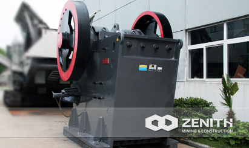
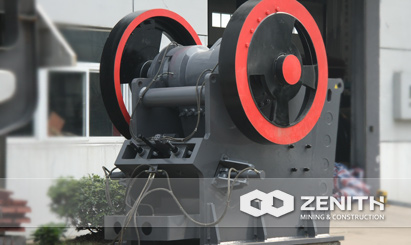
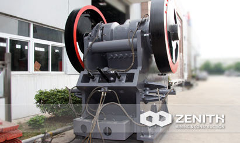
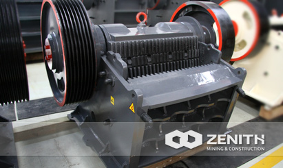

- 
- 
- 
- 
PEW Jaw Crusher
PEW series jaw crusher Adopting the world's most advanced crushing technology, which can be considered as the expert of crushing equipment. As a professional manufacturer of mining equipment, Zenith never stop the exploration of producing more excellent crushing plants for mining industry. Nowadays, the PEW Jaw Crusher in European style undoubtedly becomes the most welcome equipment as the crushing machinery. Our customers often choose it to deal with hard materials due to its high efficiency and reliable performance. In addition, the price and cost of PEW jaw crusher will never let you down.
Application of PEW Jaw Crusher
PEW series jaw crushers are mainly used in the metallurgical industry, mining industry, construction and chemical industry. They are used to making cement, building materials, fireproof materials and ceramics in the secondary and tertiary crushing, dealing with various hard minerals and rocks. This series of jaw crusher has an extra-high adaptive capacity for all kinds of mining materials (including minerals, rocks, slag) whose anti-pressure is no more than 280Mpa.
In addition, the feeding size of Zenith's PEW jaw crushers is significantly by our experts. Meanwhile, its wide range of application includes crushing hard rock, basalt, and river pebbles, etc. According to our customers both at home and abroad, this series of Zenith's products are in high accordance with the price and cost of jaw crusher.
structure of PEW jaw crusher
The structure of this durable PEW series jaw crusher contains the frame, eccentric shaft, big belt pulley, flywheel, movable jaw, side guard plate, toggle plate, rear seat of toggle plate, modulation gap screw, returning spring, fixed jaw plate and movable jaw plate, etc. Among them, the toggle plates are used for protecting the machine from damage.
PEW jaw crusher Benefits and advantages
- Chosen bearings are larger with better carrying capacity.
- Integrated structure of steel casting is adopted in the bearing housing, which can guarantee a perfect cooperation with the crushing frame. Meanwhile, it greatly enhances the intensity of the axle bearing.
- Advanced movable jaw assembly makes it more long-lasting.Movable jaw assembly adopts a high-quality steel casting, and moves through the two large flywheels made of cast steel. In addition, heavy eccentric shaft also adopts the forging billet when processing materials. All those new changes make the PEW series jaw crushers with exceptional reliability.
- World-class manufacture crafts and high-tech materials are adopted in the production, which makes this series of jaw crusher are in line with the features of open-pit mining situations.
The tacnology data
| Model | Feed Opening (mm) | Max Feeding (mm) | Discharge Opening (mm) | Capacity (t/h) | REV (r/min) | Power (kw) | Motor Model | Machine Size (mm) |
|---|---|---|---|---|---|---|---|---|
| PEW200×1000 | 200×1000 | 220 | 20-40 | 15-50 | 330 | 6-37 | Y250M-6/37 | 1400×1850×1310 |
| PEW250×1200 | 250×1200 | 220 | 20-40 | 20-50 | 330 | 6-37 | Y250M-6/37 | 1400×2050×1310 |
| PEW400×600 | 400×600 | 350 | 35-85 | 15-70 | 250 | 6-37 | Y250M-6/37 | 1920×1460×1840 |
| PEW760 | 760×1100 | 620 | 75-200 | 150-350 | 270 | 6-110 | Y315L1-6/110 | 2600×2500×2200 |
| PEW860 | 860×1100 | 720 | 100-225 | 200-500 | 240 | 6-132 | Y315L2-6/132 | 3300×2320×3120 |
| PEW1100 | 1100×1200 | 930 | 150-275 | 300-650 | 210 | 8-185 | Y355L1-8/185 | 4140×2660×35600 |